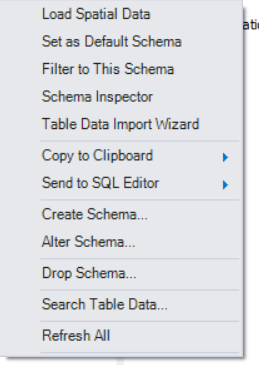
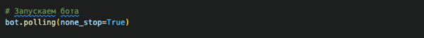

Глава II. Практическая часть.
3.1. Парсер на языке Python с загрузкой данных в SQL формат
Первичной практической задачей при создании поисково-аналитического
механизма было принято создание на языке Python обходчика сайтов по формируемой в процессе
исполнения основного файла базе адресов. В качестве первичной базы адресов в сети интернет
был обнаружен и скачан текстовый файл с 5 млн. адресами сайтов рунета (5019692) для дальнейшей
выемки случайным образом необходимого количества строк адресов для проведения эксперимента.
В качестве поэтапного увеличения характеристик эксперимента разработанный обходчик решено
тестировать на линейке из 10, 100, 1000 случайных адресов сайтов с использованием библиотеки random.
Для простоты первичной фазы эксперимента были выбраны встроенные библиотеки requests и sqlite3
языка Python для работы с веб-страницами и SQL-форматом соответственно. Для подсчета времени
работы программы использовалась библиотека time.
В ходе разработки программа будет создавать базу данных SiteBase
c таблицей SiteTable, в которой будут содержаться текстовые столбцы «www» и «html».
Программа открывает существующий в текущей папке файл base.txt и записывает во вновь создаваемый
файл adresses.txt необходимое количество строк, которые представляют из себя адреса веб-страниц.
Далее создается база данных и с каждой строки файла adresses.txt мы забираем адрес страницы
в сети интернет, записываем это значение в ячейку столбца «www», соединяемся со страницей
по адресу и записываем ее содержимое в соответствующую ячейку столбца «html» таблицы SiteTable
базы данных. В случае ошибки соединения в столбец «html» таблицы SIteTable записывается значение
NULL. В процессе исполнения программы ведется подсчет количества скачанных сайтов, количества
неудавшихся соединений, а также времени исполнения кода. Когда закончатся строки файла adresses.txt
программа печатает строку "адреса закончились", выводит количество скачанных сайтов, количество
неудачных соединений и время, затраченное на скачивание страниц.
Изображение № 27. Первичное состояние перед исполнением программы
Изображение № 28. Код программы
Запускаем код для 10 случайных сайтов, получаем
результат:
Изображение № 29. Результат обработки 10 случайных адресов
Фиксируем появление в папке проекта файлов
adresses.txt и SiteBase.db:
Изображение № 30. Изменения в папке проекта после исполнения программы
Запускаем программу для выборки из 100 адресов, получаем
следующий результат:
Изображение № 31. Результат обработки 100 случайных адресов
Запускаем программу для выборки из 1000 адресов, получаем
следующий результат:
Изображение № 32. Результат обработки 1000 случайных адресов
В процессе разработки для верификации возможности дальнейшей
работы с полученными данными были разработаны простейшие механизмы проверки. Для
начала был написан код на Python, выводящий на печать строки «www» из таблицы
SiteTable базы данных:
Изображение № 33. Код программы для печати содержимого таблицы БД

После запуска кода в терминале происходит печать содержимого
ячеек «www» в виде первичного html кода, с сохранением пробелов и отступов, как это
было реализовано разработчиками сайтов с соблюдением Document Object Model.
Изображение № 34. Печать содержимого БД в терминале
Далее для подтверждения возможности работы с базой данных
в разрезе их анализа была реализована первичная аналитическая программа, позволяющая
выявлять частотность слов на всем массиве содержимого столбцов «html» таблицы SiteTable.
При запуске кода (изображение № 36) мы получаем CSV файл:
Изображение № 35. Содержимое сформированного CSV файла
Изображение № 35. Код формирования повторений слов в CSV файл
3.2. Реализация на Python многопоточной обработки данных
для парсинга сайтов с последующим анализом в Jupyter Notebook
Для отработки навыков парсинга команда писала второй скрипт,
основным отличием которого будет многопоточность обработки сайтов, сохранение данных
в CSV формате и предобработка html данных.
Программное обеспечение:
• IDE VSCode 1.82.2 (user setup)
• python 3.10.11.
Репозиторий с исходным кодом можно будет посмотреть
в приложении.
Этапы написания скрипта:
1. Открываем терминал в VSCode "ctrl + ~" :
• Создаем виртуальное окружение:
python -m venv venv
• Активируем виртуальное окружение:
venv/scripts/activate
• Переходим в папку с виртуальным окружением:
cd ./venv
В правом нижнем углу VSCode отображается:
venv:venv
2. Добавляем/обновляем необходимые файлы:
• Обновить pip:
python -m pip install --upgrade pip
3. Формируем файл с зависимостями:
pip freeze > requirements.txt
Все актуальные библиотеки можно посмотреть в файле
requirements.txt
• Установить зависимости при клонировании репозитория локально:
python -m pip install -r requirements.txt
4. Загрузить файл с доменом ru
Ссылка на сайт с базой зарегистрированных доменов в приложении.
Скачиваем zip папку и распаковываем ее в нашу папку с проектом.
Изображение № 36. Папка с проектом, содержащая txt файл cо списком url - адресов
Изображение № 37. Фрагмент списка с url адресами
В последующем нам придется дописать https://
ко всем строчкам в этом списке, чтобы мы могли зайти на все эти сайты.
Список состоит из 5 млн адресов. Наша задача будет состоять в том, чтобы
спрасить как можно больше сайтов. Пройтись по всем не получится, так как
сайты в данном списке могут быть хорошо защищены от парсинга, а могут
и не быть запущены на сервере.
5. Создание скрипта в файле spider_parser.py
Импортируем библиотеки
Изображение № 38. Импорт библиотек
• threading - это стандартная библиотека Python, которая предоставляет
инструменты для многозадачности. threading позволяет управлять потоками.
Потоки позволяют выполнять несколько задач одновременно, что полезно для
выполнения параллельных операций. Мы воспользуемся этой библиотекой, чтобы
распараллелить потоки обработки парсинга сайтов.
• requests - это библиотека Python для выполнения HTTP-запросов. Она
облегчает отправку HTTP-запросов к веб-серверам и получение ответов.
requests позволяет нам взаимодействовать с веб-ресурсами, получать данные,
отправлять данные и многое другое.
• csv - это модуль Python для работы с файлами в формате CSV (Comma-Separated Values).
Формат CSV используется для хранения табличных данных, где значения разделены запятыми
(или другими разделителями). Модуль csv предоставляет функциональность для чтения
CSV-файлов, записи данных в CSV-файлы и обработки табличных данных.
• re - это модуль Python для работы с регулярными выражениями. Регулярные выражения
(или регулярные выражения) используются для поиска и манипуляции текстовой информацией
на основе шаблонов. Модуль re позволит нам отфильтровать полученный текст по русским
символам. В итоге мы получим чистый текст с русским символами.
Создадать файл modif_file.py, прописать функцию, которая будет к каждой строчке url
адресов добавлять https:\
Изображение № 39. Функция, модифицирующая файл
Импортируем функцию url_mod в основной файл spider_parser.py
Изображение № 40. Импорт функции
Чтение файла moifiled_urls.txt. При чтении мы будем
записывать данные в формат List и применим метод strip() - это метод строк
в Python, который используется для удаления начальных и конечных пробелов
(или других указанных символов) из строки. Он создаст новую строчку без
лишних пробелов.
Изображение № 41. Чтение url - адресов
Прописать функцию run, которая будет отвечать
за парсинг, считывание html кода с первых страниц сайтов. Можно совершенствовать
код, до “пробегания” по всем страницам сайтов, но так как это только начало проекта,
и мы практикуем основные навыки работы с большими данными, остановимся на самом
простом парсинге.
Изображение № 42. Class Parser
С экземпляром потока и его методами, можно ознакомиться
в Приложении №1. Немного модифицировали код для наших целей и получили основную
часть кода, которая отвечает за парсинг сайтов. Это многопоточный метод поиска.
Для нас он наиболее приемлем, так как большие объемы url адресов обходить
получается намного быстрее нежели при обычном обходе.
Изображение № 43. Class Parser
В конце мы создадим строку заголовка для csv файла.
Изображение № 44. Запись CSV-файла
Проблемы, с которыми мы столкнулись:
1. Не все сайты из скачанного списка существуют,
возможно сервер не работает;
2. Не все сайты позволяют обходчику прочитать данные;
3. Сохранить данные такого объема на GitHub обычным
способом нельзя.
Решение проблем:
1. Решили продолжать работу по парсингу по тем сайтам,
которые существуют. Список сузится, но для начала нашего проекта и этого достаточно.
2. Решение ошибки 443 находится на стадии разработки;
3. Использовали метода работы с большими данными, подключив
GIT LFS;
4. Указали файлы отслеживания, сохранили изменения
и перенесли на Git Hub.
Изображение № 45. Git LFS
Промежуточные результаты:
1. Написана программа для многопоточного парсинга
с извлечением данных с первых страниц сайтов и сохранением их в CSV формате.
2. Количественные данные:
- Из базы в 5 млн сайтов
- Обработано 100 000 сайтов
- Спарсено 11 000 сайтов
Анализ полученных данных и Jupyter Notebook
Данные из файла parser.csv представлены двумя столбцами,
в первом стоблце url адреса, во втором столбце спарсенные данные в виде текста.
Для анализа данных будем использовать Anaconda 1.12.1, python 3.10.13
(версии выше не поддерживают библиотеку nltk).
Загрузку файла осуществили с помощью pandas, подсчет
строк провели с помощью мультипроцессинга, чтобы закрепить навык работы с большими
данными. Количество строк 11372. Удалили строчки содержащие строчки NaN, осталось
9919 строк. Определим функцию, которая очищает текст от некорректных символов.
Применили данную функцию к нашему датафрейму, используя два способа: последовательная
обработка и мультипроцессинг.
Анализ текста: получим число слов в тексте и число уникальных
слов с помощью модуля collections. Результат «Число уникальных слов: 8991», «Сумма
частот уникальных слов: 9919».
Поиск популярных слов производится с помощью библиотеки
NLTK. Вывод представлен в виде кортежа, таблицы, графика и облака слов.
Стемпинг и лемматизацию провести не получилось, так как
получили ошибку «MemoryError: ». Связано с большим объемом данных, попробуем
в дальнейшем использовать PySpark.
Частотный анализ слов и словосочетаний провели по тем позициям,
которые нас интересуют для дальнейшего исследования.
Ознакомиться с подробным анализом в jupyter notebook можно
в приложении.
Результаты:
1. Провели анализ текста и обработку естественного языка
с помощью библиотеки NLTK;
2. Освоили методы работы с большими данными
в jupyter notebook.
Изображение № 46. Схема анализа
3.3 Анализ полученных данных средствами SQL
Возьмем нашу базу, полученную при помощи формирования данных
языком Phyton в CSV – файл и преобразуем для чтения с помощью SQL. При помощи программы
EXCEL подготовим данные для таблицы.
Изображение № 47. Подготовка данных
Данные необходимо сохранить в формате :65001: Юникод (UTF-8),
указать на формат данных: с разделителем. Вы можете начать импорт с любой строки.
Указать заголовки – выбрав галочкой «Мои данные содержат заголовки»
(См. Изображение № 48).
Изображение № 48.
Нажав кнопку далее, определим разделители. В нашем случае,
это «знак табуляции» и «пробел» (См. Изображение № 49). И кнопку считать
последовательные разделители одним. Выставляем ограничение строк до 100.
Изображение № 49.
При количестве строк величиной 100 получается 15100 – ячеек.
Изображение № 50.
Сохраняем файл в формате CSV (разделитель- запятая).
Изображение № 51.
В файле закаченной базы данных 12924 строк. Разбираем данные по файлам поскольку
с большим объемом в 500 строк и в 75500 ячеек MySQL не справился.
Изображение № 52.
Изображение № 53.
12924 строки делим по 150 строк в файл и получаем 85 документов для анализа.
Заходим в MYSQL в базе данных необходимо выбрать кодировки согласно рисунку 8.
Изображение № 54.
Нажимаем правой кнопкой мыши на вкладке справа.
Изображение № 55.

«Table Data Import Wizart» Появляется табло скачивания файла.
Изображение № 56.
Нажимаем кнопку «NEXT». Появляется окно с символами из нашего файла.
Изображение № 57.
Нажимаем кнопку «NEXT».
Изображение № 58.
Таблица появилась в окне «OUTput». Меняем Имя второй колонки, поскольку
наличие синтаксических символов мешают программированию.
Изображение № 59.
Ищем совпадения для построения карты рынка товаров
и услуг (Изображения № 60 и 61).
Изображение № 60.
Изображение № 61.
Изображение № 62.
С физическими адресами обнаружено 18 объектов.
Результат:
В результате анализа базы данных 85 файлов обнаружено 1748
объектов с товарами и услугами и 1386 физических адресов.
3.4. Анализ и вывод полученных данных с
помощью инструментов BI
В Power BI можно использовать функции и инструменты
для поиска строк с повторяющимися значениями в строке. Одной из возможностей
является использование Power Query, чтобы выполнить эту задачу. Вот шаги,
которые были реализованы:
Открываем Power Query Editor, выбрав соответствующую
опцию в меню Power BI. «Текстовы или CSV-файл»:
Изображение № 62.
Загружаем или создаем таблицу, в которой будем искать строки с повторяющимися
значениями.
Изображение № 63.
Поскольку нам необходимо найти совпадение в тексте
в 2 столбца: URL и content, нажимаем «Извлечение таблицы с использованием
примеров.»
Изображение № 64.
Вставляем в заголовок столбец URL, нажимаем на «+»,
во второй столбец пишем «content»
Когда вид столбцов организован, выставляем на
основе 200 строк в окне, разделитель – точка с запятой. – извлекаем.
Изображение № 65.
Появляется таблица с колонками, выделяем столбец, содержащий строковые
значения, в которых нужно найти повторы.
Изображение № 66.
Нажимаем в верхнем меню во вкладке «Преобразование» кнопку «Извлечение»,
«Текст после разделителя».
Изображение № 67.
Вводим текст в нашем случае это «адрес», «товар», «услуги». С формированием
одноименных столбцов.
Изображение № 68.
Далее выводим результат после удаления пустых строк.
Изображение № 68.
Результат:
В поле адресов - 831 отдельных и 791 уникальных, товаров - 232 отдельных
и 222 уникальных, услуг - 225отдельных и 219 уникальных.
3.5 Разработка аналитического парсер-бота
с помощью Python
Этот раздел представляет разработку простого телеграм-бота,
который выполняет анализ веб-сайтов, веденных пользователем. Давайте рассмотрим
его разработку и функциональность по шагам:
Изображение № 69.
Импортированные библиотеки:
- `telebot`: используется для работы с Telegram API
и создания бота.
- `requests`: используется для отправки HTTP-запросов
к веб-сайту и получения его содержимого.
- `BeautifulSoup`: используется для парсинга
HTML-контента и извлечения текста.
- `Counter`: используется для подсчета количества
встречающихся элементов в последовательности.
Изображение № 70.
Установка токена бота и инициализация бота:
- `TOKEN`: хранит токен бота.
- `bot = telebot.TeleBot(TOKEN)`: Создает экземпляр бота
с использованием указанного токена.
Изображение № 71.
Обработчики сообщений:
- `handle_start(message)`: Обрабатывает команду `/start`.
Отправляет приветственное сообщение и запрашивает адрес веб-сайта.
- `handle_website_input(message)`: обрабатывает
введенный пользователем адрес веб-сайта. Получает содержимое веб-сайта
и предоставляет пользователю опции для анализа.
- `handle_analysis_choice(message, html_content)`:
Обрабатывает выбор пользователя по типу анализа (топ-10 символов, топ-10 слов,
количество символов, пробелов и самый частый символ, полный анализ).
Изображение № 72.
Выбор анализа:
- "1. Топ-10 символов": находит и выводит 10 самых часто
встречающихся буквенных символов в тексте.
- "2. Топ-10 слов": находит и выводит 10 самых часто
встречающихся слов (более 5 символов) в тексте.
- "3. Количество символов, пробелов, самый частый символ":
выводит общее количество символов и пробелов, а также самый часто встречающийся
символ и его количество в тексте.
- "4. Полный анализ": Выполнение всех предыдущих пунктов.
Запуск бота:
- `bot.polling(none_stop=True)`: Запускает бота, который
непрерывно опрашивает серверы Telegram на предмет новых сообщений.
Изображение № 73.

Пример работы бота с сайтом google.com
Изображение № 74.
3.5. Вывод результатов проекта с помощью создания
сайта на HTML/CSS
В целях реализации рекомендаций по написанию дипломной работы,
обобщения всех материалов коллективной дипломной работы и визуализации результатов
проекта командой было принято решение о создание простой версии веб-страница.
В качестве шаблона сайта был выбран один из вариантов простого сайта, а именно шаблон
был взят с репозитория github.com (https://github.com/guih58/OnePage).
Style.css позволяет визуально оформить страницу раскрасить
подзаголовки, поменять фон или отформатировать изображение. В каталоге scr/ будут
размещены снимки экрана, которые в последствии будут отображены на страницах.
С учётом множества различных материалов логика сайта была
построена таким образом, чтобы пользователь мог просмотреть вложенный контент
и переключаться между различными частями дипломной работы, используя меню,
расположенное в верхней части экрана.
Изображение № 75.
Для создания и визуализации логического дерева был использован
онлайн ресурс https://tree.nathanfriend.io/.
В качестве IDE использовалось программное средство
Visual Studio Code. Формирование верхнего меню осуществляется в тегах "body header".
Изображение № 76.
Основной текст страниц также размещен в тегах "body header".
Для примера взят фрагмент кода страницы contents.html, входящей в состав страниц сайта.
Изображение № 77.
Конечным результатом написания кода является отображение
информации в веб браузере.
Изображение № 78.
Полный код сайта находиться в репозитории github.com,
а также сохранён и доступен на drive.google.com.